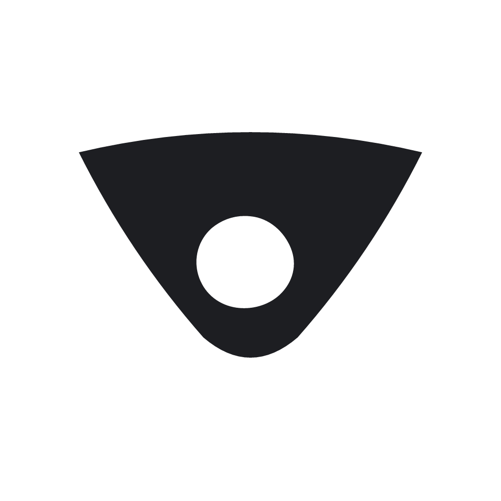
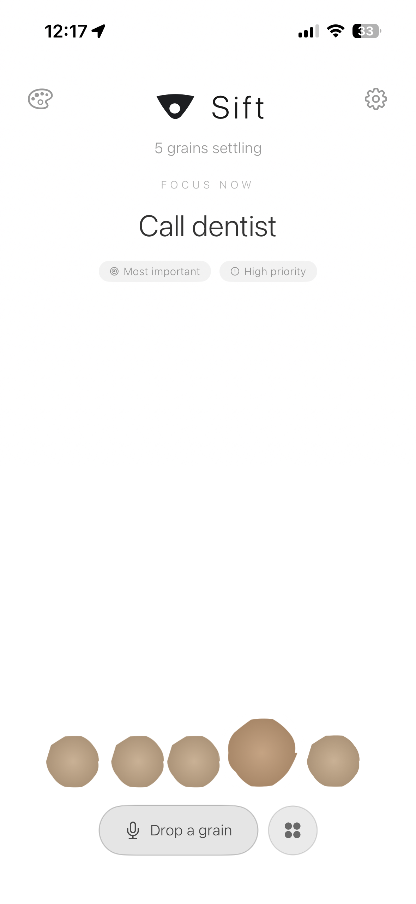
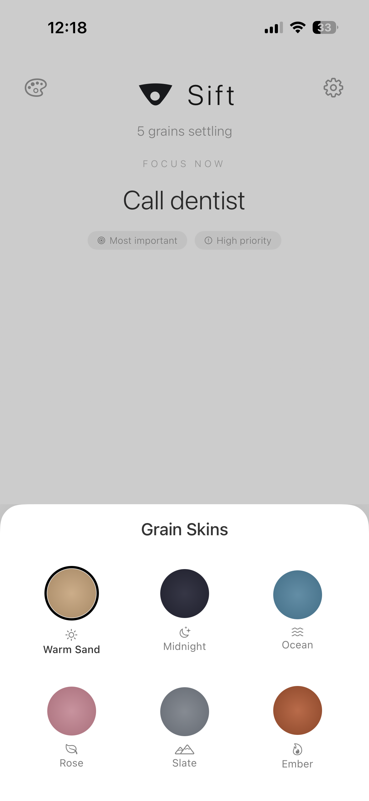
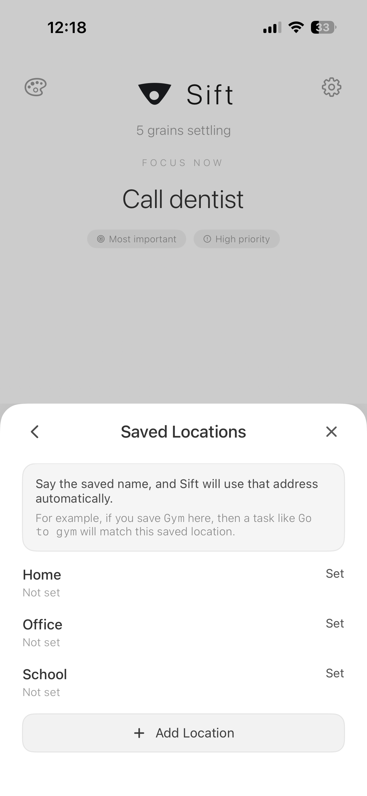
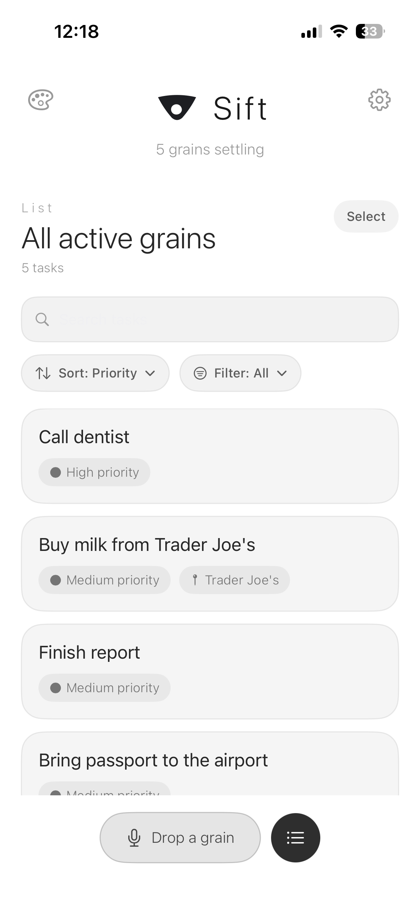
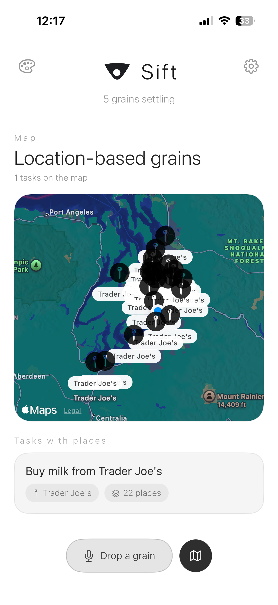
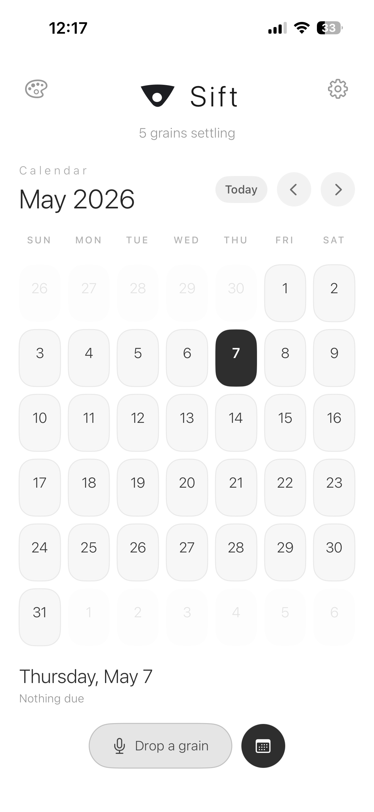

GRAINS
Visual priority
Tasks become weighted grains so the heaviest things naturally stand out.

SIFT2 / 30 grains
OFFICIAL SITE
Sift turns your tasks into living grains so the things weighing on you feel visible, movable, and easier to sort through.
FEATURES
Sift turns your task list into something you can feel and work with, not just scan and ignore.
GRAINS
Tasks become weighted grains so the heaviest things naturally stand out.
VOICE
Speak a task out loud and turn it into something actionable without breaking your flow.
LOCATION
Attach tasks to places so they resurface when you are where they matter.
VIEWS
See your tasks as grains, on a map, in a list, or in a calendar.
HOW IT WORKS
Sift helps you move between focus, calendar, list, map, and grain-based views without losing the thread of what matters.

Bring the most important task to the front.

Personalize the grain look to match your style.

Save places once and reuse them across tasks.

Scan, sort, and filter active tasks.

See tasks that matter in specific places.

See what is due across time.
SUPPORT